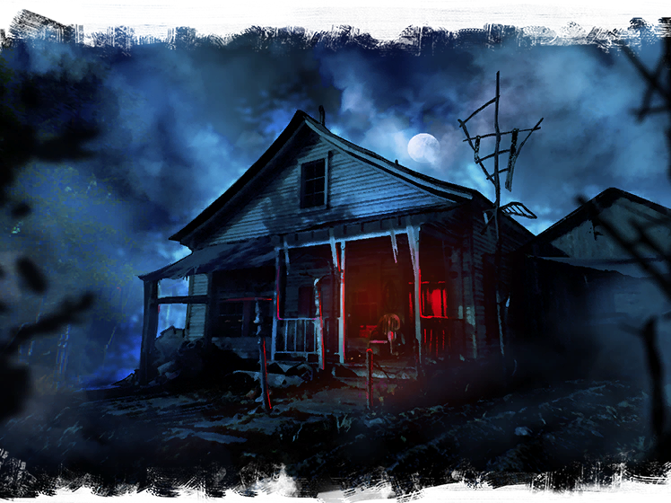
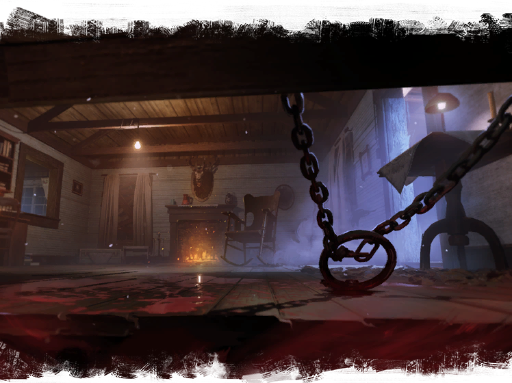
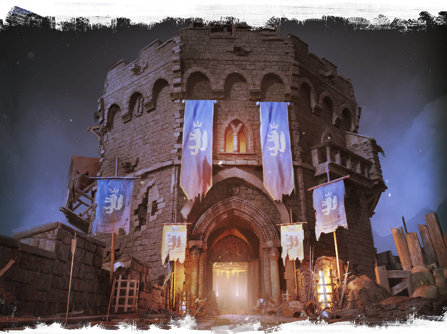

Cleaver County
Features locations from Ash vs. Evil Dead.

Remington Rapids
Features locations from The Evil Dead and Evil Dead II.

Castle Kandar
Features locations from Army of Darkness.
Melhores lugares para Caçadores ficarem durante a partida. Clique em um mapa para ver todos os spots.

Features locations from Ash vs. Evil Dead.

Features locations from The Evil Dead and Evil Dead II.

Features locations from Army of Darkness.